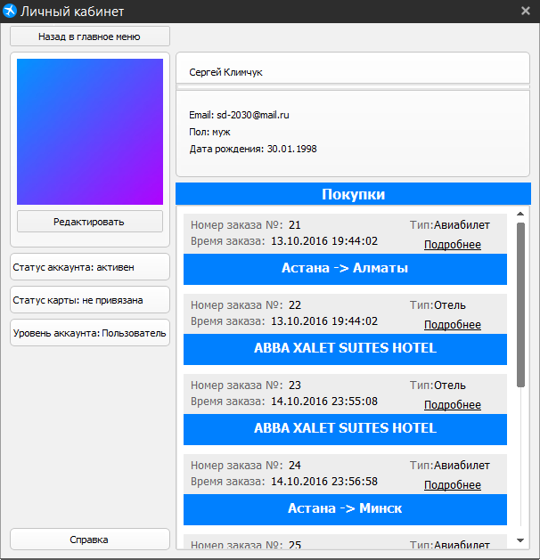
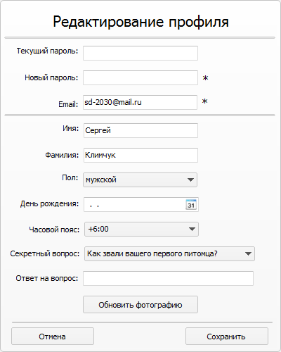

Окно личного кабинета
Это окно предназначено для просмотра личной информации и её изменения. Для того что бы изменить пароль, Email, имя, фамилию, пол, дату рождения, часовой пояс, фотографию, секретный вопрос и ответ на него, нажмите кнопку "Редактировать". Для выхода в главное меню нажмите кнопку "Назад в главное меню".

Для просмотра подробной информации о покупке(ах) нажмите кнопку "Подробнее".
Для изменения пароля введите старый пароль и новый пароль(не меньше 6 символов) в соответствующие поля и нажмите кнопку "Сохранить".
Для изменения Email заполните поле новый пароль(должен быть введен используемый пароль) и поле Email и нажать кнопку "Сохранить".
Для изменения имени заполните поле имя и нажмите кнопку "Сохранить".
Для изменения фамилии заполните поле фамилия и нажмите кнопку "Сохранить".
Для изменения пола выберите свой пол из выподающего меню и нажмите кнопку "Сохранить".
Для изменения даты рождения заполните поле или выберите иж выподающего календаря и нажмите кнопку "Сохранить".
Для изменения часового пояса выберите нужный часовой пояс в выподающем меню и нажмите кнопку "Сохранить".
Для изменения секретного вопроса и ответа на него, выберите нужный секретный вопрос из выподающего меню, заполните поле секретный вопрос и нажмите кнопку "Сохранить".
Для изменения фотографии аккаунта, нажмите кнопку "Обновить фотографию", выберите нужное фото в появившемся окне и нажмите кнопку "Сохранить".
